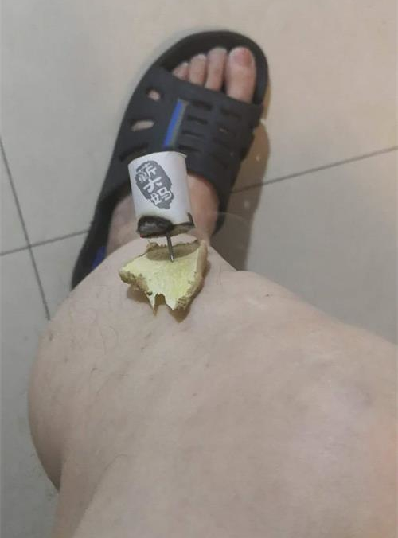

进入六月，上海的天气越来越潮湿，天气总是闷闷的，而雨一直下不下来，身上总感觉黏糊糊，就算刚洗个澡也清爽不了几分钟。呆在这样的环境里久了，胃口就会受影响，吃饭都提不起兴趣。又不想开空调，怎么办呢？
其实这样的湿热天气里，却是艾灸养生的好时候。
艾灸养生中有一种叫“三伏灸”，就是在夏天的三伏天进行艾灸以调理身体。关于“三伏灸”的介绍网上很多，我就不赘述了。今年因为农历闰四月，入伏稍晚，要到7月16日才入伏。但是伏前的一个多月其实就可以开始艾灸计划。
我在两年前的2018年曾参加“正安聚友会”活动，跟随孙老师学习“三伏灸”，当时坚持每周五次，艾灸一百次，受益很大。除了脾胃功能改善，免疫力也提高很多，腿脚有力，感冒也很少得了。19年因为时间关系，没有艾灸，今年一直有三伏灸的打算，就从6月1日开始吧。
【以下为本人实践记录，仅作为记录保存，有想做三伏灸者请咨询有经验的医生和老师。 】
温针灸足三里
2018年学习的就是这个温针灸足三里穴。
足三里穴是足阳明胃经的要穴，之所以选择这个穴位艾灸，是因为其是人体一个重要的保健穴位，四总穴歌中第一句就是“肚腹三里留”，民间也有“艾灸足三里，等于吃一只老母鸡”的说法，可见其保健功效。另一个方面足三里穴在小腿外侧上，艾灸禁忌较少，自己艾灸比较方便和安全。
另外，选择温针灸足三里，也是因为比较方便，在足三里穴进针，然后将艾柱插在针尾，点燃艾柱即可。人还可以继续坐着不耽误学习和工作，只是不能移动而已。而手持艾条悬灸的话，时间稍长手会累；用麦粒灸或者艾绒隔姜灸又需要躺下，自己操作不方便。

具体操作
-
仔细找准足三里穴。
-
使用0.35x60mm的一次性针具，进针。自己进针的话，可以使用针管，比较方便。
-
用牙签在姜片中间扎个眼，然后穿到针上。姜片厚度以皮肤不烫为度。
-
再用牙签在艾柱上扎孔，然后放在针的顶端（针尾）。艾柱上的洞深一点，这样挂得稳一些。
-
用打火机点艾柱，注意从艾柱靠近皮肤一端点火。
-
一般一次灸2-3柱，大概需要40-50分钟。等艾柱燃烧完后，轻轻一弹就掉了，下面用一张废纸接住即可。
-
灸完了，先去掉艾灰，等针凉了取下姜片，然后一边轻轻来回捻转一边出针。出来后用大拇指按压针孔，如果有血滴用棉球或者餐巾纸擦去即可。如果出针时针很紧，有可能是滞针现象，可以按压针孔周围皮肤，等针松动些再出针。
注意事项
-
足三里的取穴
一般采用多种取穴法互相结合来定位。一种是很多书上写得：外膝眼下三寸，四横指为三寸；第二种是，由下向上推胫骨脊，到推不动时（这里会有一个凸起），外开一横指；第三种是先找到阳陵泉：腓骨头前下方凹陷处，这个比较好找。然后再向下斜前方（差不多45度角）一横指，就是足三里了。
记住，这都是坐着取穴，大腿基本与小腿垂直情况下的找穴方法。如果是躺下腿伸直的情况，位置会有变化。差不多向下要移一寸左右。
这里的“寸”指“同身寸”，也就是取穴者自己的“寸”，“中指同身寸”是以中指中节屈出时内侧两端纹头之间作为1寸；而“拇指同身寸”是以拇指指关节的横度作为1寸；另外四指并拢差不多3寸。取穴最准确方法是“骨度取穴法”，大家搜搜就知道了，只是要记很多东西，比较麻烦。
-
初学者害怕扎针
本人从小就怕打针，去医院针灸还出现过几次晕针现象。记得两年前，我自己第一次扎足三里，拿着针犹豫了好久好久。后来一咬牙上了！坚持了一百多次，从开始的犹豫、纠结到后来慢慢的接受、快快下手，再到最后每次扎自己有点跃跃欲试。算是克服了怕针心理。不过好久又没扎，今年再来扎，心里又有点忐忑。
给自己的安慰是：足三里相对比较安全，一般应该不会扎坏什么的；另外，想想那些针灸名医，开始学针灸时也都是要先在自己身上反复练习的，熟练了才给病人扎的。想想这些，自己就多一些勇气了。
温针灸中扎足三里，进针比平时只是毫针扎足三里要深一些，因为针尾要装艾柱，不深一点会挂不住。所以进针时，有时候难免会扎到骨头而下不去。一般这是因为进针角度问题。足三里穴在胫骨和腓骨之间，要扎进骨缝中才能下去。
这个时候不要担心，稍微提拉起针，然后调整角度继续尝试。多试几次就有经验不害怕了。
-
其他的一些注意事项
-
最好上午10点到下午4点之间艾灸，晚上9点之后尽量不要灸了；
-
百日筑基，三伏灸坚持一百次的话，一般每周灸3-5次，如果有上火症状，就停几天；
-
灸前可以喝点温水。而灸后口渴也可以喝温水，不要喝凉水。另外灸好后不要马上吹风，同时至少半小时再吃饭，洗澡什么的也要隔时间久一点。
-
人太累、心情不好、暴雨雷电气候反常时不要针灸。本人前年曾在心情不好时艾灸，结果出现晕灸，头晕心慌，脸色苍白，赶紧中止，息灸起针，躺一会才恢复。
-
糖尿病患者因为皮肤伤口难愈合，最好不要温针灸，可以选择艾条悬灸。
-
用过的针要注意收拾，可以放在一个废玻璃瓶里，等一定量了一起扔到有害垃圾中。
-
百次筑基第一次的自我感受
我身体比较敏感，2018年第一次艾灸后，回家就开始发烧38度，连续三天，没吃药，就是喝水卧床休息，三天后就好了。后来也出现过因为心情不好，晕针晕灸现象等。
所以这次艾灸我也有点担心，但是实践下来一切顺利，只是艾灸时微微有点头晕，然后灸好后口很渴，多喝温水就好了。
艾灸过程中，开始灸一会后小腿就开始发热，然后慢慢向下，脚底很热。快结束时，膝盖处才开始发热。
记得18年艾灸也是这样的过程，热先是向下，然后灸20多次后再向膝盖走，膝盖又经过很长一段时间（大概到80次），才能上行到大腿，最后是上行到胃肠部。
这次艾灸完后第二天，大腿部有隐隐的热，持续了一整天。可见，这次艾灸的热量已经向上传了，只是艾灸当时小腿和脚太热，没有感觉到而已。